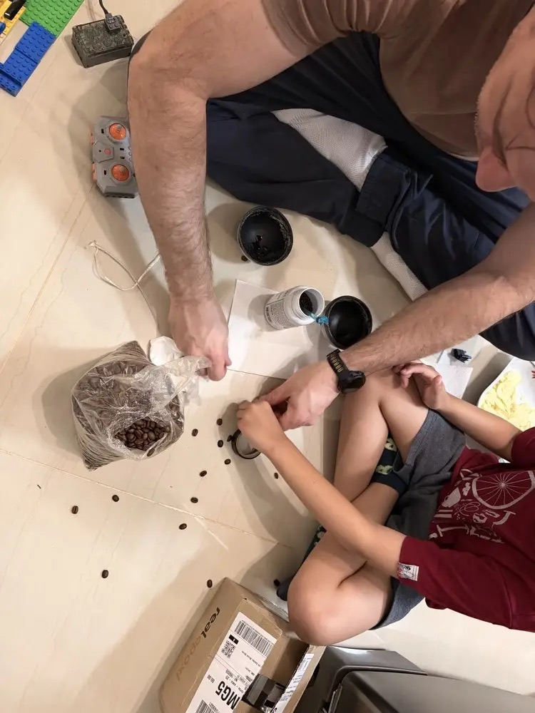
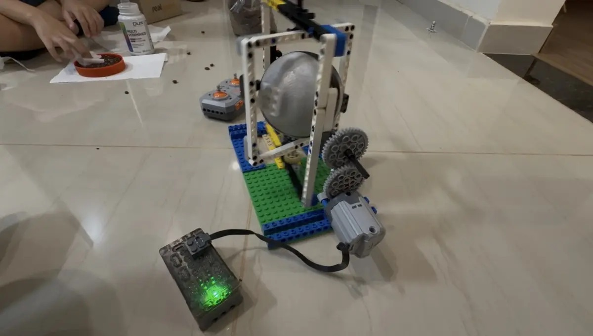
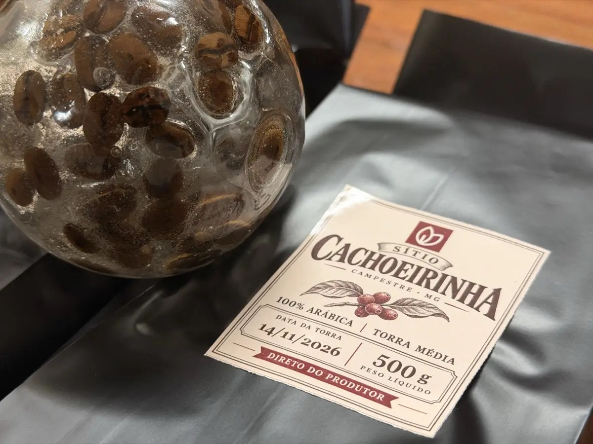
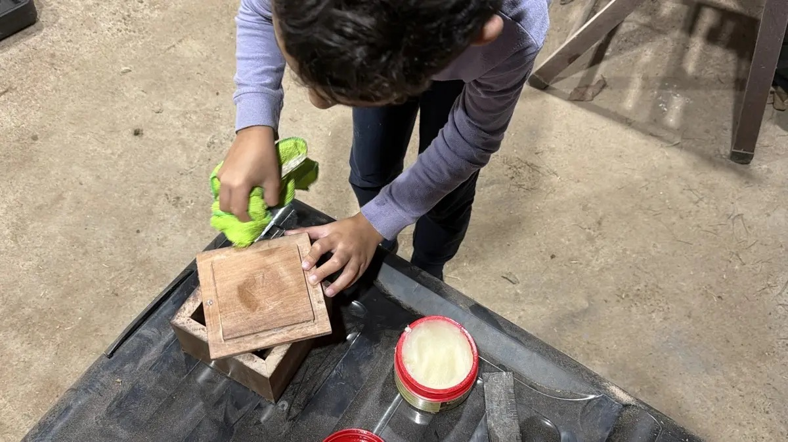
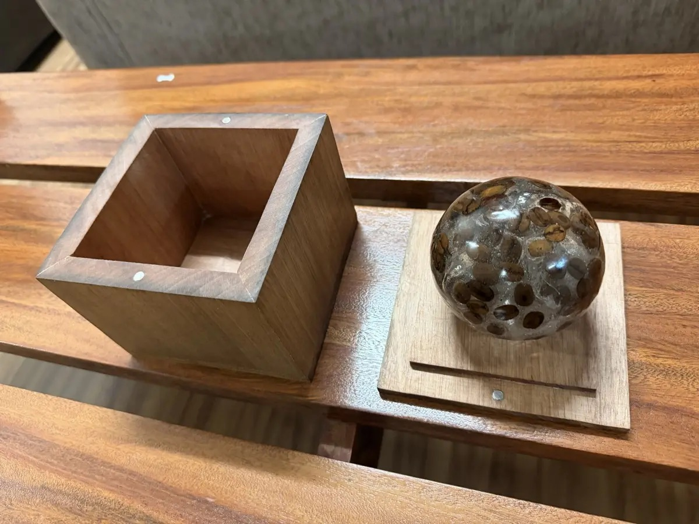

Bola perfeita de café
Bola perfeita é um clássico do Manual do Mundo. No sábado, 28 de novembro, o Iberê dá autógrafos do livro O que tem dentro? em São Paulo, e eu, minha esposa e o Benjamim vamos. A ideia era levar uma bola nossa: de café e oca, com grãos obviamente do Sítio Cachoeirinha.
Já adianto que não saiu nem bola nem perfeita.
- Material
- Resina epóxi de baixa viscosidade e grãos de café do sítio
- Molde
- Impresso em 3D, em duas metades
- Cura
- Umas 8 horas girando numa máquina de LEGO
- Caixa
- Jequitibá Rosa, tampa com ímãs, cera de carnaúba
Como uma bola fica oca
Em vez de encher o molde, você coloca pouca resina, fecha e deixa girando enquanto ela cura. A resina vai escorrendo pela parede de dentro e endurece como uma casca. Ou seja, o miolo fica vazio porque nunca teve resina ali. A baixa viscosidade ajuda a resina a correr pelo molde antes de começar a endurecer.

O molde foi impresso em 3D. A máquina que gira, eu e o Benjamim montamos com LEGO e um motor.

O que deu errado
Foram umas 8 horas girando. No fim, a resina tinha acumulado de um lado e deixado uma casca relativamente fina no resto. Ficaram algumas bolhas presas. E, por mais desmoldante que a gente tenha passado, a peça não soltou fácil do molde: acabou quebrando e tivemos que emendar.
A emenda foi sendo feita em etapas, com resina nova colando as metades. Depois vieram banhos de resina por fora, para engrossar a casca e deixar mais brilhante. Mas ainda ficaram alguns vincos e imperfeições. Se fosse fazer outra, com certeza iria pelo caminho do polimento.

A caixa
Para entregar, fiz uma caixa de Jequitibá Rosa, com a tampa presa por ímãs e acabamento em cera de carnaúba. Eu uso a serra elétrica, mas quem dá o acabamento é o Benjamim.


No sábado ela vai assim meio torta mesmo, mais como um reconhecimento de que fazer uma bola perfeita não é tão fácil quanto parece. Se você já fez peça oca de resina girando o molde, conta pra mim se teve sucesso ou se acabou acumulando um pouco no final!